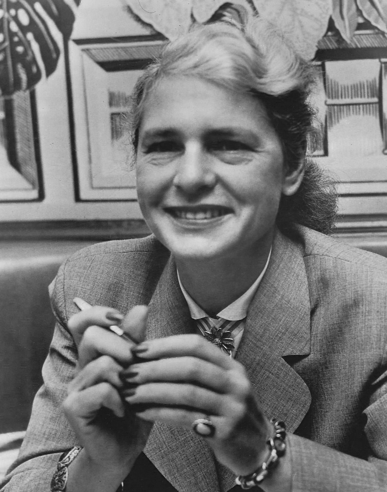
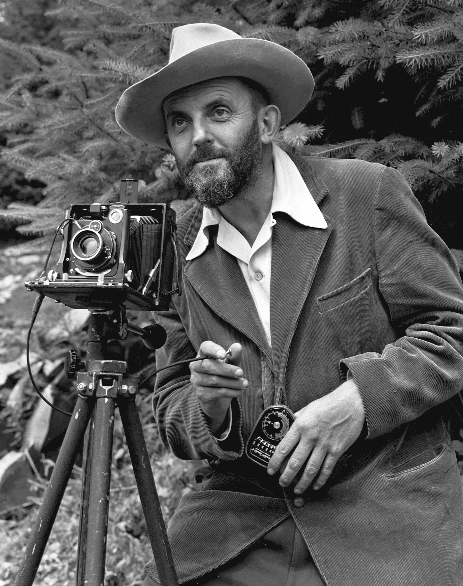
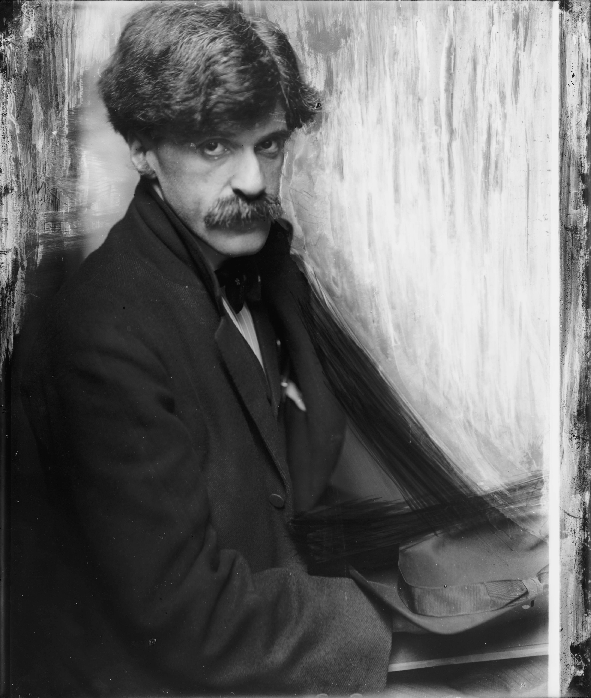
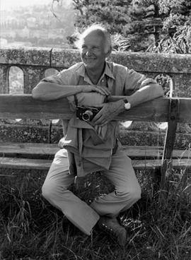
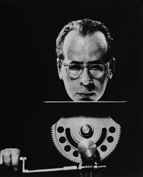
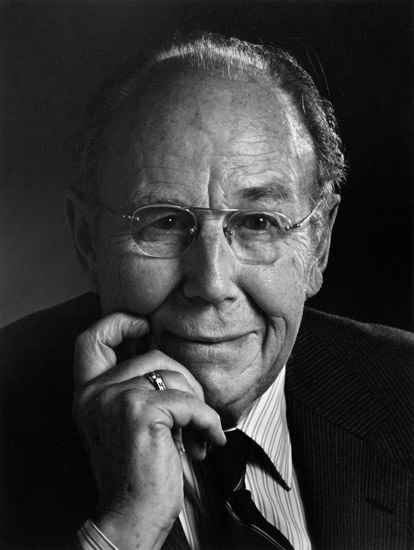
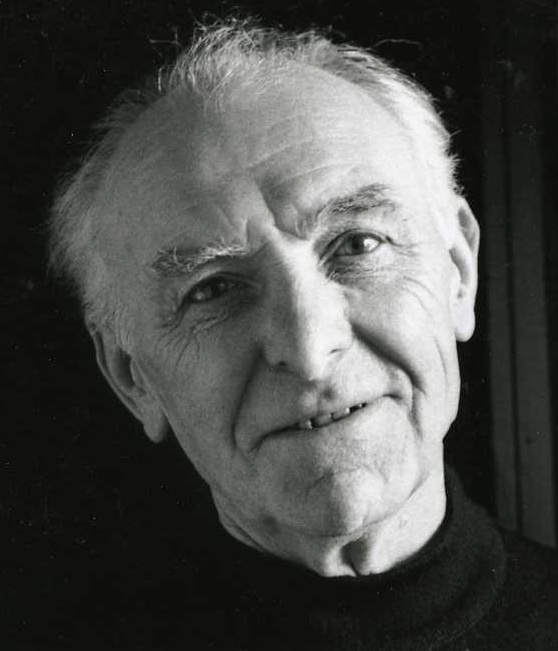
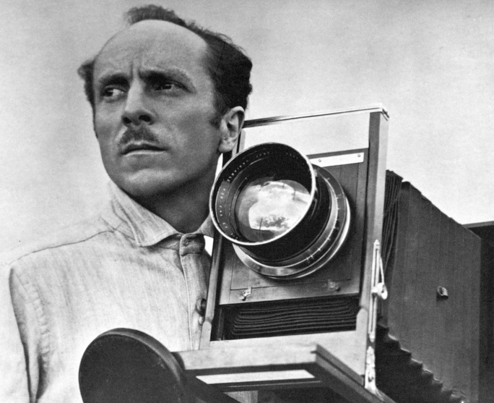
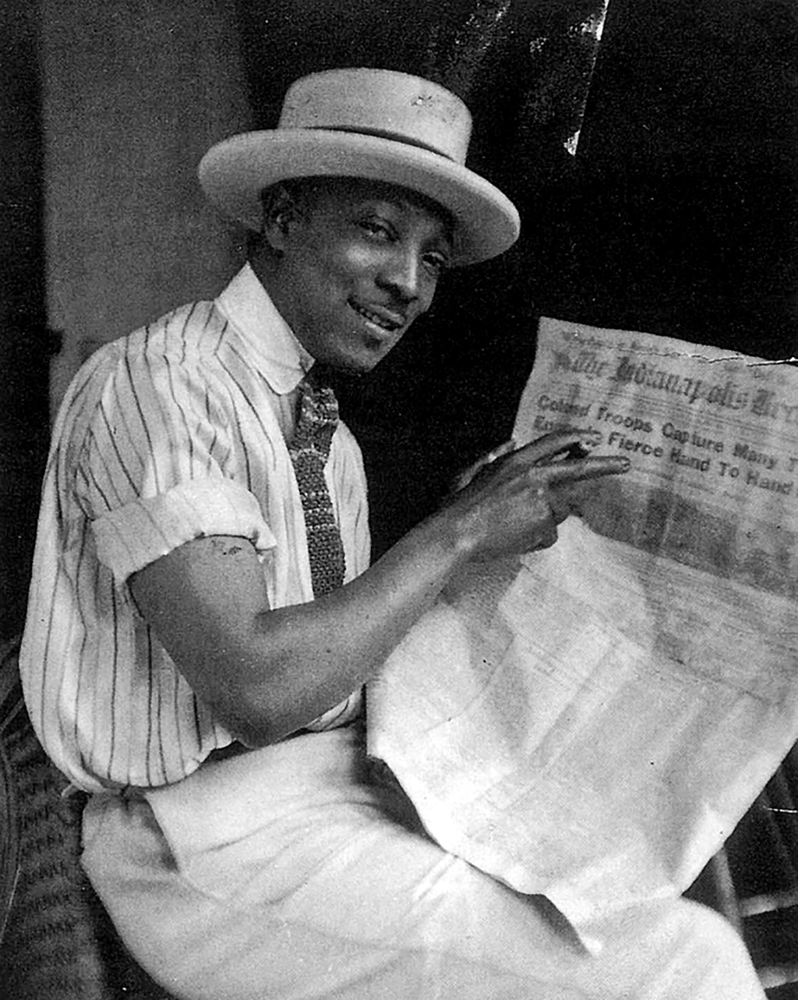

Famous Photographers
Margaret Bourke-White
Margaret Bourke-White is an American documentary photographer worked from 1930s to 1950s. She worked as a commercial photographer for a steel company in her early career and then devoted herself to photojournalism. She has Maybe because of her early experience of doing photography in the industry. I feel that most of her photos look serious and realistic. Besides, I think most of her photos fall in two categories. Because she lived moved to the industrial city Cleveland for a while in a period where American industry went through a prosperous bloom, one type of her photos features the beauty and grandness of architecture and industry. For example, Construction du barrage de Fort Peck sur la rivière Missouri shot 1937 characterizes gigantic and geometrical beauty of the construction of Fort Peck Dam. Un Douglas 4 (D-4) survolant Manhattan shot in 1939 shows the highly-urbanized city of Manhattan and reflects the economic prosperity in the U.S. Later on, after she became a photojournalist, her photo focus more on reflecting the social status and people’s life during certain historical events. For example, At the Time of the Louisville Flood pictures the gap between the wealthy and lower class of America. She even shot photos in WW2. From these photos, we can see the changes going through in the world at that time.
Ansel Adams

Ansel Adams is an American photographer and conservationist born in 1902 who is famous for landscape photography. When he was a child, he was brought to Yosemite and was given a camera as a gift. He was inspired by the light fall through the mountains and fall in love with photography.
In his early 20s, he experimented with techniques of pictorialism, which tries to imitate paintings with photographs to create a soft feeling over the pictures, and he created his famous photograph Lodgepole Pines, Lyell Fork of the Merced River in Yosemite National Park. But his photograph style is not established until 1930s. In his youth, he became a keen mountaineering lover, and used sharp focus, small aperture, long exposure and delicate manipulation in the darkroom to create photos of landscape with clear details, wide dynamic range, large depth of field and high contrast monochrome. From 1930s to 1950s, he kept using these techniques as his style and created famous photos of scenery in Western America and WW2. His most famous photographs are produced in this period. In his later career, he primarily worked on formalizing his early pictures, holding exhibitions and editing his photographing experience into books.
Alfred Stieglitz
Alfred Stieglitz is an American photographer born in 1864 and is recognized as the founding father of American modern photography. He has a similar style with Ansel Adams. His early interest lied in pictorialism. From 1982 to 1900, he took his early famous photos like A Venetian Canal, A Wet Day on the Boulevard and hosted the Camera Note magazine. In 1897, he published his first portfolio, Picturesque Bits of New York and Other Studies. From 1902, he started a movement called Photo-secession and hosted the magazine Camera Work. The main idea of the movement is that photography should focus more on the techniques of photography itself rather than being an accessory of painting. And he started to publicize the famous European modern artists like Auguste Rodin and Paul Cézanne to American audiences. Then, from 1907, he created photographs like Steerage that are the most important photos in modern art. His topic is usually discovered from everyday life. He tried to show the original characteristics, qualities and personalities realistically through serious photography.
Henri Cartier-Bresson
Henri Cartier-Bresson is a French photographer known for candid photography. Candid photography is taking photographs without intentional posing of the subject. Bresson created the famous idea of the decisive moment which is to capture the true and genuine essence of the things people meet. Bresson himself is known to be expert in capture the touching and meaningful instant of ordinary things in life. His famous photos include Place de l'Europe, Hyéres, Rue Mouffetard, Marilyn Monroe and etc. He almost always used a 35mm camera with a 50mm lens. He founded Magnum Photos with other famous photographers including Robert Capa, George Rodger and David Seymour. In his later career, he visited many countries, including China, India, Japan, Soviet Union and so on, and created many memorable photos.
Philippe Halsman
Philippe Halsman is an American photographer who is famous for monochrome portrait photography. When he was young, he was accused of killing his father and thus spent four years in prison. After he left prison, he came to France. At the time, portrait with soft color and bokeh was very popular, but he didn’t like the trend and tried to express people’s internal state in his picture. Then he worked for Vogue and became famous in Paris. People in his picture is not stiff but is of their characteristics through their gestures or the surroundings they are in. Later, after the second world war started, he and his wife moved to New York. And he became famous again by his photograph of American model Connie Ford. And he met many famous artists and scientists, including Dali and Einstein. He also began to experiment with surrealistic portraits, which is more abstract and representative of people’s characteristics. We could see in many of his photos that the subject is jumping or there is only parts of the subject such as the mustache of Dali.
Harold E. Edgerton
Harold E. Edgerton was an Electrical Engineering professor at Massachusetts Institute of Technology who is well-known for expanding high-speed photography. He greatly advanced the usage of stroboscope in photography. He used stroboscopic equipment to dramatically shorten the shutter speed and captured instances that ordinary cameras could not capture at that time. The basic procedures are to put the subject in a dark room and prepare a stroboscope with very strong light. The stroboscope flash as the shutter begins to move to light up the subject. Under this setting, photographers can get proper exposure with very short shutter speed. The shutter speed of his famous photos is typically less than 1 millisecond. The details happened so fast that are not observable to human eyes are all frozen in his shots, such as a bullet shooting through an apple, a drop of milk exploding on the ground, bullets shooting through cards and so on. Furthermore, some of his photos is exposed “several times.” That is, the stroboscope flashes multiple times in a single short. As a result, the trajectory of moving subjects is recorded clearly in a single photo instead of being blurry. His photos are beautiful and innovative at the time. However, according to himself, he does not want to be recognized as an artist. Instead, he views himself as an engineer and his work as the result of simply pursuing truth.
Robert Doisneau
Robert Doisneau is a French photographer who is as famous as Henri Cartier-Bresson. They are both experts in documentary photography. Different from Bresson, who loves to travel to different places, Doisneau take most of his pictures in Paris, capturing interesting instants in Paris citizens’ daily life. In his work, we can see the naiveness of children, the sweetness of lovers and so on. In some of his works, I feel that he did not pay too much attention to the details of the picture, such as whether the lines are straight. His compositions are plain and simple. But his photos touches people because it captures the sincere feelings of common people. I think that, as a photographer, it is important to pay deep and serious attention to the ordinary details that may be neglected around us in our daily life. Feelings that are commonly ignored can be very touching and arouse many thinking when captured in photos.
Edward Weston
Edward Weston is an American photographer born in 1886 and died in 1958. He was also in the f64 group as Ansel Adams, the photographer we discussed a couple weeks before. The idea behind the group is to use small aperture to obtain large depth of field so as to preserve the truthfulness of the image. So, their photos are sharp and full of tension. Different from Ansel Adams, his subjects include more abstract and conceptual topics, ranging from portraits, still objects to landscapes. The shades and gradation of his photo are always the strengths of his pictures. According to himself, he is good at turning ordinary objects into extraordinary works.
James Van Der Zee
James Van Der Zee is an African-American photographer born in 1886 in Lenox, Massachusetts. He is the documenter and a main leader of the Harlem Renaissance in 1920s. A majot topic of his works is the rise of African-American middle class in New York. He used double exposure and retouching negatives in his work. In 1969, he held the exhibition Harlem on My Mind at the Metropolitan Museum of Art. His contribution to photography not only lies in his experimential artistic techniques but also lies in his contribution to enhance racial equity.